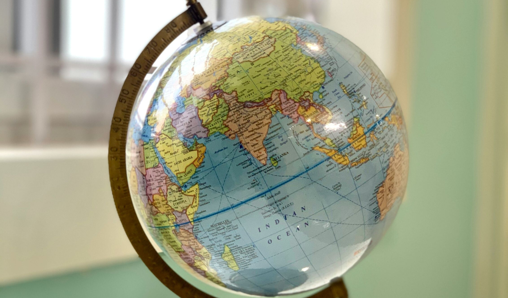
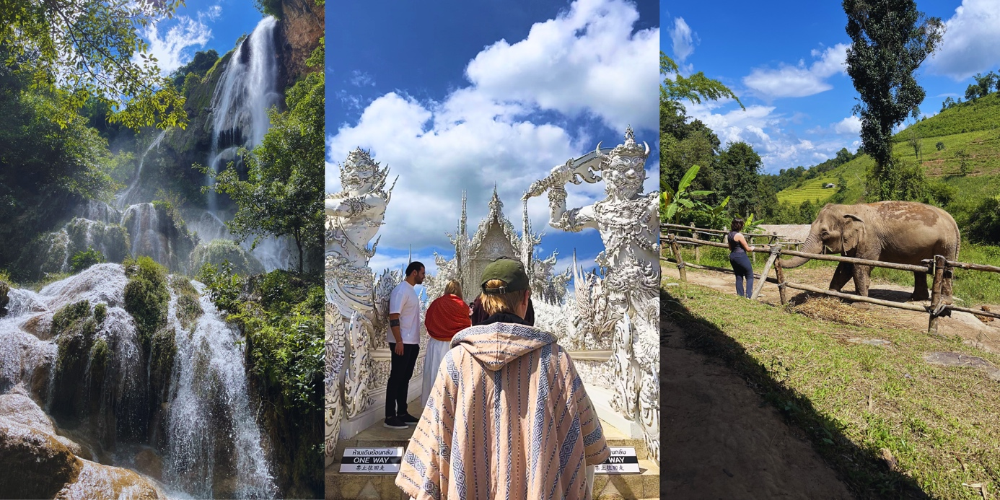
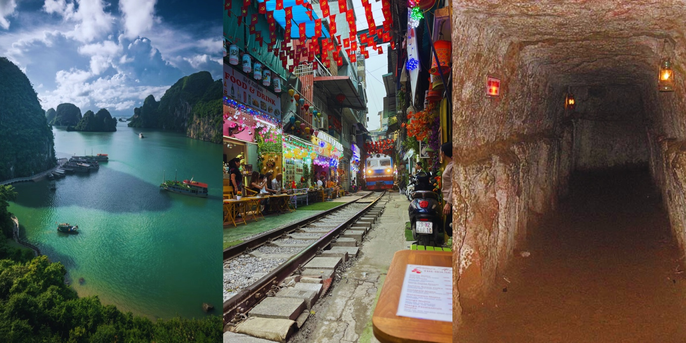

Thailand
Thailand is a country in Southeast Asia, known for its beaches, temples, and vibrant cities. The northern part of Thailand which I visited is especially characterized by its landscapes which are very mountainous and contain many beautiful waterfalls.
Must-see places:
- Erawan National Park in Kanchanaburi
- White Temple in Chiang Rai
- Elephant Sanctuary in Chiang Mai

Vietnam
Vietnam is a country in Southeast Asia, known for its rich history, diverse landscapes and lively culture.
Must-see places:
- Ha Long Bay
- Train Street in Hanoi's old quarter
- Historic Tunnels from the Vietnam War
